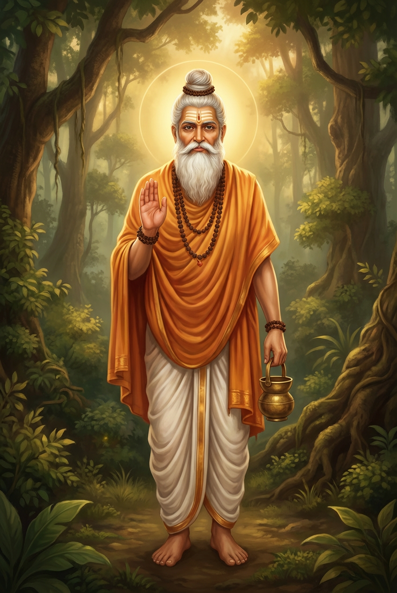

🖼 이미지 교체
새 이미지 URL을 입력하거나 붙여넣기 하세요
※ 공개 접근 가능한 이미지 URL만 사용하세요 (Imgur, Unsplash 등)
인생의 구조를 이해하고, 현실과 영혼 양쪽을 동시에 성숙시켜 가기 위한 이틀간.
리트리트는 단순한 힐링 프로그램이 아닙니다.
국내 각지에서 열리는 이 리트리트는, 아가스티아잎에 기록된 지혜를 토대로, 인생의 구조와 우주의 법칙을 이해하고 현실의 삶에 직접 적용하기 위한 이틀간의 집중 과정입니다.

아가스티아(Agastya)는 힌두교 성전 「리그베다」에 등장하는 역사상 가장 위대한 성자 중 한 명입니다. 타밀 문명의 정신적 기반을 확립했으며, 의학(싯다 의학), 천문학, 철학에 깊은 영향을 미쳤습니다.
전승에 따르면, 아가스티아는 우주의 아카식 레코드에 접근하는 능력을 부여받아, 과거·현재·미래를 통틀어 무수한 영혼의 운명을 야자 잎에 기록했습니다. 리트리트는 이 지혜를 현대 삶에 적용하는 실천의 장입니다.
아가스티아잎이란, 약 5,000년 전 남인도의 성자 아가스티아에 의해 기록되었다고 전해지는 지혜의 체계로, 「당신 전용의 인생 설명서」라고도 불립니다.
그곳에는, 태어난 목적, 인생에서 향향향히게 될 과제, 카르마의 경향, 그리고 미래가 어떤 법칙에 따라 전개되어 갈지가 제시되어 있습니다.
본 리트리트에서는, 이것들을 신비적인 이야기로서 다루는 것이 아니라, 인생을 읽어내기 위한 실천적인 지침으로서 배워나갑니다.
중심이 되는 테마 중 하나가, 카르마의 법칙입니다.
카르마를 「과거의 인연」이나 「피할 수 없는 운명」으로 파악하는 것이 아닌, 자신의 선택과 행동이 어떻게 현실을 창출하고 있는지를 이해하기 위한 구조로서 풀어 나갑니다.
카르마의 4요소를 통해, 왜 같은 사건이 반복되는지, 어디서 인생의 흐름이 정체하고, 어디서 가속하는지가 명확해져 나갑니다.
이러한 이해는, 정신 세계 안에서만 완결되는 것이 아닙니다. 일이나 인간관계, 건강, 일상의 판단 등 현실 세계에 그대로 응용할 수 있으며, 불필요한 우회를 줄이고 본질적으로 인생을 나아가기 위한 시각이 길러집니다.
리트리트는, 인생을 극적으로 바꾸기 위한 장이 아닙니다. 인생의 구조를 이해하고, 현실과 영혼 양쪽을 동시에 성숙시켜 가기 위한 장입니다. 이틀이라는 한정된 시간 속에서, 자신의 인생을 조감하고, 앞으로를 보다 가볍게 걷기 시작하기 위한 토대가 다듬어져 나갑니다.
각 세션은 강의와 체험을 50:50으로 구성하여, 머리로 이해하는 것과 몸으로 느끼는 것이 함께 통합됩니다.
새 이미지 URL을 입력하거나 붙여넣기 하세요